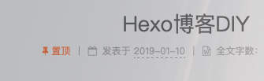
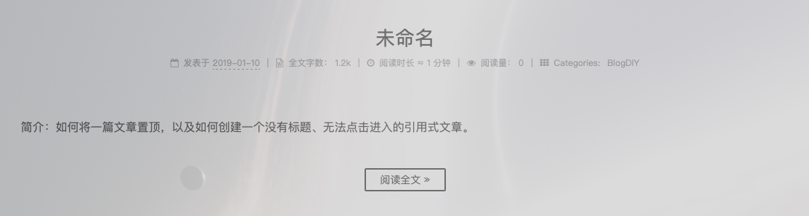
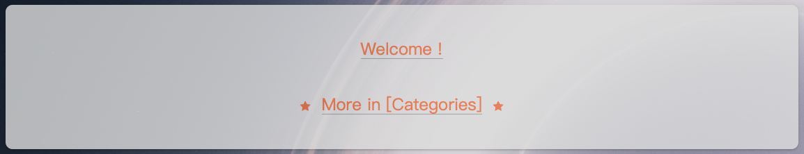
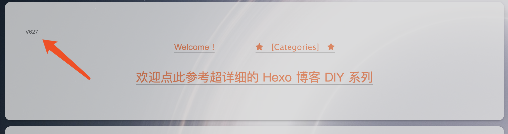
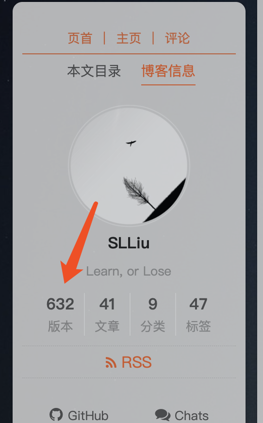
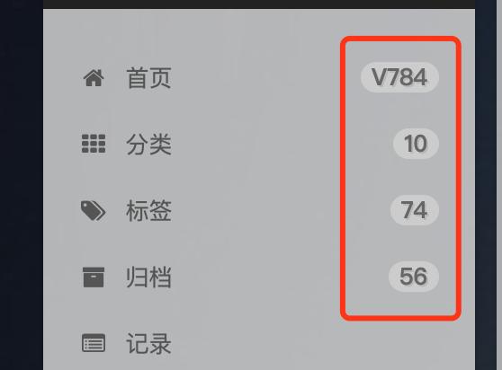
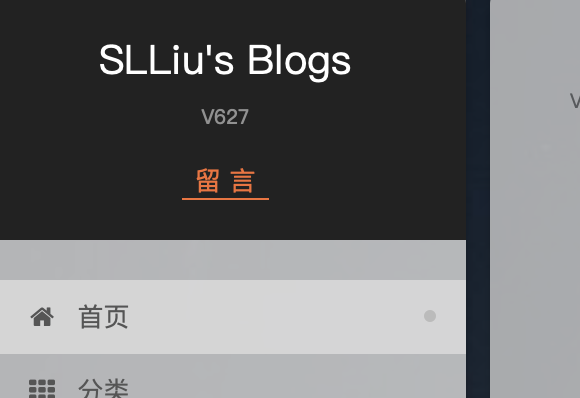
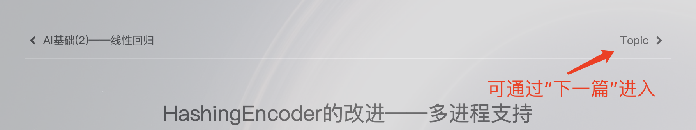
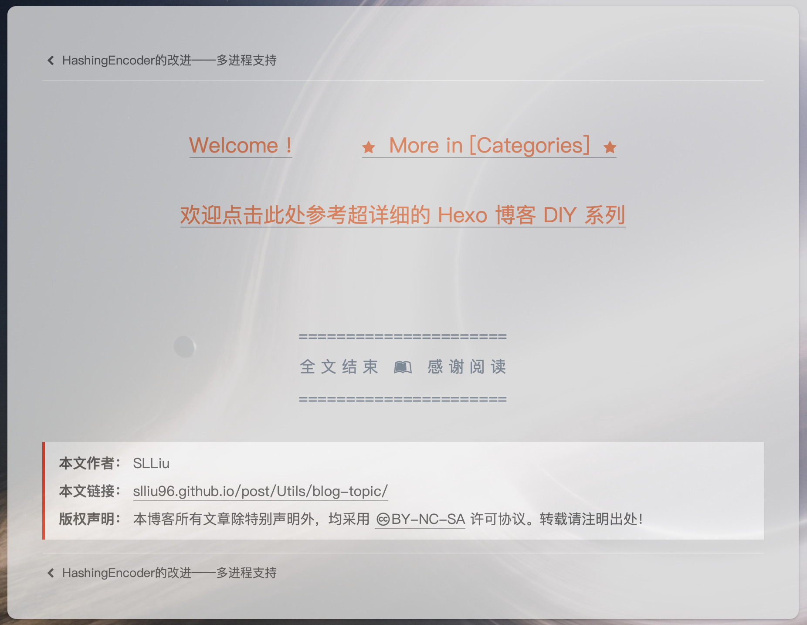

Hexo博客DIY（7）文章置顶和公告栏 1. 文章置顶 Hexo 本身并没有内置文章置顶功能，因此需要自行安装。不过 Hexo 本身有一个对文章排序的组件，也就是在站点配置文件内的 index_generator 选项，置顶功能其实就是每次排序的时候，把其中的置顶文章排在最前，本质上是一个排序组件，Hexo 默认的是 hexo-generator-index，所以先卸载再重新安装一个可以置顶的排序组件：
1 2 3 4 5 npm uninstall --save hexo-generator-index npm install --save hexo-generator-index-pin-top
从插件名字上就能看得出来支持置顶了。该插件的 GitHub 地址：hexo-generator-index-pin-top 。插件安装完之后，只需要在文章头部信息栏内设置 top 属性即可：
1 2 3 4 5 --- title: Hexo博客DIY（7）文章置顶和公告栏 date: 2019-01-10 07:31:04 top: true ---
这样这篇文章就具有置顶效果了。不过，仅仅只是这么做，文章虽然确实置顶了，但是从文章列表上来看，和普通的文章没什么不同。如果不特意去对比文章发布时间，可能会以为只是最新的文章而已。例如一些说明、通知之类的，为了能有个比较突出的标志，可以在 next/layout/_macro/post.swig 文件中找到以下位置并添加代码：
1 2 3 4 5 6 7 8 9 10 <div class "post-meta" > {% if post.top %} <i class "fa fa-thumb-tack" style="color: #EB6D39" ></i> <font color=EB6D39>置顶</font> <span class "post-meta-divider" >|</span> {% endif %} <span class "post-time" > ... ...
这里的图标、文字、以及各自对应的颜色都可以自定义。完成后的效果就是：

2. 公告栏 现在文章置顶已经成功实现了，但是还有个问题，比如像我的博客置顶的这篇文章是类似于一个窗格的形式，更符合“置顶公告栏”这么一个设定，没有标题、没有分类和标签、没有日期等等，但是如果不填写 title 栏，仍然会显示一个默认的“未命名”标题：

而且会导致搜索无法使用，因此如果想实现这种：

就需要在文章的头部信息栏加入一个 type 属性：
1 2 3 4 5 6 7 --- title: Hexo博客DIY（7）文章置顶和公告栏 date: 2019-01-10 07:31:04 type: "quote" categories: tags: ---
并且取值为 “quote”，这样文章就会变成一个完全没有标题和各种属性的引用块了。
3. 增加版本记录 目前主流的两个博客部署平台就是 GitHub Page 和 Coding 了，Coding 的部署速度还算比较快，GitHub 因为某些特殊原因，部署完之后实际内容生效时间的间隔有些长，表现为从本地 Hexo 部署到 Page 后，需要过几分钟网络上的内容才生效。有时做了一些小改变，也不知道到底是延迟未生效，还是改动本身没有作用。因此可以增加一个版本标志，每次部署的时候手动 +1，并显示在博客内，这样即可通过版本号是否一致来判断当前网络上的是否最新版本了。
首先在站点配置文件 blog/_config.yml 中增加一个字段：
然后在需要显示的地方使用以下代码：
1 <span style="color: #666666;font-size:10px;" >V{{ config.latestVersion }}</span>
具体的显示信息可以自己 DIY，如果想使用局部变量来获取这个数值，可以在 themes/next/layout/_layout.swig 中找到如下位置添加变量：
1 2 3 4 5 6 {# Language & Config #} {% set title = __('title' ) !== 'title' && __('title' ) || config.title %} {% set subtitle = __('subtitle' ) !== 'subtitle' && __('subtitle' ) || config.subtitle %} {% set author = __('author' ) !== 'author' && __('author' ) || config.author %} {% set description = __('description' ) !== 'description' && __('description' ) || config.description %} {% set latestVersion = __('latestVersion' ) !== 'latestVersion' && __('latestVersion' ) || config.latestVersion %}
然后在需要使用的地方直接使用：
引用即可，当然，使用类似的方法也可以显示在侧栏、标题栏等位置，出于这个主题手机版不会显示侧栏，因此可以选择同时显示在悬浮侧栏和置顶公告栏的最顶处，或同时显示在悬浮侧栏和博客标题栏。
（1）在置顶公告栏处显示的效果如下图所示：

这个效果是通过判断文章是否是”置顶公告栏“来设置的，可以先给置顶的公告栏增加一个自定义属性：latestVersion，然后在 next/layout/_macro/post.swig 文件中找到 Post Body 部分：
1 2 3 4 5 6 7 8 9 10 11 12 13 14 15 16 17 18 19 <div class "post-body{% if theme.han %} han-init-context{% endif %}{% if post.direction && post.direction.toLowerCase() === 'rtl' %} rtl{% endif %}" itemprop="articleBody" > {# Gallery support #} {% if post.photos and post.photos.length %} ...... {% endif %} {############### ↓↓↓↓↓ 在置顶公告栏文中添加版本标识 ↓↓↓↓↓ ###############} {## 显示版本标识 ##} {% if post.latestVersion %} <span style="color: #666666;font-size:10px;" >V{{ config.latestVersion }}</span> {% endif %} {############### ↑↑↑↑↑ 在置顶公告栏文中添加版本标识 ↑↑↑↑↑ ###############} {% if is_index %} ...... {% endif %} ...... </div>
（2）悬浮侧栏的显示效果如下图所示：

这个效果需要在文件 next/layout/_macro/sidebar.swig 里找到 if theme.site_state 并修改：
1 2 3 4 5 6 7 8 9 10 11 12 13 14 15 16 17 18 19 20 21 22 23 24 25 26 27 28 {% if theme.site_state %} <nav class "site-state motion-element" > {############### ↓↓↓↓↓ 在侧栏中添加版本标识 ↓↓↓↓↓ ###############} <div class "site-state-item" > {########## 显示版本标识 ##########} <span class "site-state-item-count" >{{ config.latestVersion }}</span> <span class "site-state-item-name" >{{ __('state.latestVersion' ) }}</span> </div> {############### ↑↑↑↑↑ 在侧栏中添加版本标识 ↑↑↑↑↑ ###############} {% if config.archive_dir != '/' and site.posts.length > 0 %} ...... {% endif %} {% if site.categories.length > 0 %} ...... {% endif %} {% if site.tags.length > 0 %} ...... {% endif %} </nav> {% endif %}
并且在 next/languages/ 目录下，找到 en.yml 和 zh-CN.yml 这两个语言文件（根据自己的博客语言需求修改对应的文件即可），分别在里面找到 state 字段并增加一个 latestVersion 属性：
1 2 3 4 5 6 7 8 9 10 11 12 13 14 15 state: latestVersion: 版本 posts: 文章 pages: 页面 tags: 标签 categories: 分类 state: latestVersion: Version posts: posts pages: pages tags: tags categories: categories
（3）在菜单栏小事的效果如下图所示：

可以通过修改 next/layout/_macro/menu/menu-badge.swig 实现：
1 2 3 4 5 6 7 8 9 10 11 12 13 14 15 16 17 18 19 20 {% macro render(name) %} {% set badges = { home: config.latestVersion, archives: site.posts.length, categories: site.categories.length, tags: site.tags.length } %} {% for menu, count in badges %} {% if name == menu %} {% if menu == "home" %} <span class "badge" >V{{ count }}</span> {% else %} <span class "badge" >{{ count }}</span> {% endif %} {% endif %} {% endfor %} {% endmacro %}
（4）在博客标题栏显示的效果如下图所示：

首先在 next/source/css/_common/components/header/site-meta.styl 中添加需要显示的效果样式（根据自己的喜好自定义）：
1 2 3 4 5 6 7 .site-titleVersion { font-size: 10px; opacity: 0.5 ; margin: 0px; padding: 0px; gravity: center; }
然后在博客标题栏中添加版本信息，修改：next/layout/_partials/header/brand.swig，在主标题下面增加一行文字：
1 2 3 4 5 6 7 8 9 10 11 12 13 <div class "custom-logo-site-title" > ...... </div> {## 博客标题栏中的站点版本 ##} <div class "site-titleVersion" >V{{ config.latestVersion }}</div> {## 博客标题栏中的留言链接 ##} <a href="{{ config.titleContact_url }}" class "site-titleContact" >{{ config.contact }}</a> {% if subtitle %} ...... {% endif %}
具体的样式和放置的位置可以根据喜好调整代码。此时博客标题栏中已经可以显示版本信息了，但是在页面加载或刷新时，其他的元素都有一个渐进的效果，为了不违和，也可以给博客标题栏中的版本信息增加相同的效果。还是在 next/source/css/_common/components/header/site-meta.styl 中，在最下面找到 use-motion 部分，这里定义的是需要动画的元素的初始状态。默认的动画是顶部间距从 -10 渐进到 0，如果想用默认动画，则只需要把 site-titleVersion 加到列表中：
1 2 3 4 5 6 7 8 9 .use-motion { .brand { opacity : 0 ; } .logo, .site-title, .site-subtitle, .custom-logo-image, .site-titleVersion { opacity: 0 ; position: relative; top: -10px; } }
由于我自己想让版本信息和下面的留言板链接统一，都从 -5 渐进到 5，因此需要单独设置：
1 2 3 4 5 6 7 8 9 10 11 12 13 14 15 .use-motion { .brand { opacity : 0 ; } .logo, .site-title, .site-subtitle, .custom-logo-image { opacity: 0 ; position: relative; top: -10px; } .site-titleVersion, .site-titleContact { opacity: 0 ; position: relative; top: -5px; } }
然后找到动画脚本文件 next/source/js/motion.js，先在本地变量定义区定义好这个 CSS 样式：
1 2 3 4 5 6 7 8 9 10 11 12 13 14 15 16 NexT.motion.middleWares = { logo: function (integrator ) var sequence = []; var $brand = $('.brand' ); var $image = $('.custom-logo-image' ); var $title = $('.site-title' ); var $subtitle = $('.site-subtitle' ); var $logoLineTop = $('.logo-line-before i' ); var $logoLineBottom = $('.logo-line-after i' ); var $titleVersion = $('.site-titleVersion' ) var $titleContact = $('.site-titleContact' ) ...... } ...... }
然后实现动画效果（为了表示层级关系，保留几个方法，但省略了内部源码）：
1 2 3 4 5 6 7 8 9 10 11 12 13 14 15 16 17 18 19 20 21 22 23 24 25 26 27 28 29 30 31 32 33 34 35 36 37 38 39 40 41 42 43 44 45 46 47 48 49 50 51 52 53 54 55 56 57 58 59 NexT.motion.middleWares = { logo: function (integrator ) ...... var $titleVersion = $('.site-titleVersion' ) var $titleContact = $('.site-titleContact' ) $brand.length > 0 && sequence.push({ ...... }); function hasElement ($elements ) ...... } function getMistLineSettings (element, translateX ) ...... } function pushImageToSequence ( ...... } NexT.utils.isMist() && hasElement([$logoLineTop, $logoLineBottom]) && sequence.push( ...... ); NexT.utils.isMuse() && hasElement($image) && pushImageToSequence(); hasElement($title) && sequence.push({ ...... }); hasElement($subtitle) && sequence.push({ ...... }); hasElement($titleVersion) && sequence.push({ e: $titleVersion, p: {opacity : 0.5 , top : 5 }, o: {duration : 100 } }); hasElement($titleContact) && sequence.push({ e: $titleContact, p: {opacity : 1 , top : 5 }, o: {duration : 100 } }); ...... }, ...... };
再次部署，动画效果已经加上了，一切和谐。
4. 从侧栏去掉文章计数（已弃用） 正常情况下，Next 主题侧栏会有一个显示文章、分类、标签的计数，但是如果我们创建了一个上文所示的“公告栏”，而只是用来做一些通知、信息展示等功能，可能就并不想把这些文章算进去。想要减掉这部分的文章数量，可以在 next/layout/_macro/sidebar.swig 文件里找到 if theme.site_state 的部分并修改：
1 2 3 4 5 6 7 8 9 10 11 12 {% if theme.site_state %} ...... {########## 去掉侧栏中对博客置顶公告栏文章计数 ##########} {########## 该方法已弃用 ##########} <span class "site-state-item-count" >{{ site.posts.length - 1 }}</span> <span class "site-state-item-name" >{{ __('state.posts' ) }}</span> ...... {% endif %}
其实就是直接把 site.posts.length 减掉了 1 而已，方法是笨方法，因为如果删掉了那篇文章，或者新增了一篇，还要再改一次源码，不过这是个备用方法，site 属性是 Hexo 提供的，似乎没法用简单的办法修改其计算逻辑。
5. 从“归档”去掉文章（已弃用） 如果选择从侧栏的文章计数中去掉了某篇文章，可能也会希望“归档”里同样不记录，同样，归档里也有一个文章计数，还另有一个所有文章的列表，可以看到我的归档里并不包括置顶那个“公告栏”的文章，修改的方式也很类似，找到 next/layout/archive.swig 文件中 ARCHIVE BLOCK 部分并修改：
1 2 3 4 5 6 7 8 9 10 11 12 13 14 15 16 17 18 19 20 21 {#####################} {### ARCHIVE BLOCK ###} {#####################} <div class "post-block archive" > ...... {% if theme.cheers %} ...... {% else %} <span class "archive-page-counter" > {% set posts_length = site.posts.length %} {########## 设置 post_length 以修改归档页上方的文章计数 ##########} {########## 该方法已弃用 ##########} {{ _p("counter.archive_posts" , site.posts.length - 1 ) }} </span> {% endif %}
同样，直接把 site.posts.length 减掉了 1 来去掉计数。
同样在 ARCHIVE BLOCK 部分，再在刚才的代码下面找到循环遍历所有文章的部分并修改：
1 2 3 4 5 6 7 8 9 {% for post in page.posts %} {########## 增加 if 判断文章是否设置字段 billboard: true ##########} {% if not post.billboard %} {########## 把原本 for 循环里面的代码放进这个 if 里面来 ##########} ...... {% endif %} {% endfor %}
这样，只要我们在文章的头部信息栏内增加一个 billboard 标签（可以自定义，只要代码里和文章里一致即可），就能从“归档”的列表中去掉这篇文章！同理，也可以增加任意约束，比如去掉日期早于某个时候的文章、去掉带有某个标签的文章等等，只要把约束全部加进 if 里去即可。不过这里的修改只影响到“归档”中的列表，博客首页的所有文章还是会显示的，想要博客不加载某篇文章会在以后介绍。
6. 在归档中禁止进入 上面说了两个方法，分别减掉侧栏和归档中的“博客公告栏”的计数，但如果再开启博客菜单栏右侧的小标记：
按照上面的方法，又要修改一次 next/layout/_macro/menu/menu-badge.swig 中的代码，所以是个治标不治本的办法。为此，干脆不改变计数，而是在归档中禁止点击进入“博客公告栏”的实际文章地址，并且在“博客公告栏”的上一篇和下一篇文章中，禁止通过“上一篇”或“下一篇”进入，禁止“上一篇”或“下一篇”进入会在下一节详解。
首先观察 next/layout/archive.swig 中的代码：
1 2 3 4 5 6 7 8 9 10 11 12 13 14 15 16 {##### ↓↓↓关键代码↓↓↓ #####} {% import '_macro/post-collapse.swig' as post_template %} {##### ↑↑↑关键代码↑↑↑ #####} ...... {% for post in page.posts %} {# Show year #} ...... {# endshow #} {##### ↓↓↓关键代码↓↓↓ #####} {{ post_template.render(post) }} {##### ↑↑↑关键代码↑↑↑ #####} {% endfor %}
发现了一个很关键的依赖文件 next/layout/_macro/post-collapse.swig：
1 2 3 4 5 6 7 8 9 10 11 12 13 14 15 16 17 18 19 20 21 22 23 24 25 {% macro render(post) %} ...... <{% if theme.seo %}h3{% else %}h2{% endif %} class "post-title" > ...... {% else %} {##### ↓↓↓关键代码↓↓↓ #####} <a class "post-title-link" href="{{ url_for(post.path) }}" itemprop="url" > {% if post.type === 'picture' %} {{ post.content }} {% else %} <span itemprop="name" >{{ post.title | default (__('post.untitled' )) }}</span> {% endif %} </a> {##### ↑↑↑关键代码↑↑↑ #####} {% endif %} </{% if theme.seo %}h3{% else %}h2{% endif %}> ...... </header> </article> {% endmacro %}
标记了“关键代码”的这一段，就是“归档”中实际显示每一篇文章的代码了，稍作修改，根据文章是否有 billboard: true 属性来做不同的处理：
1 2 3 4 5 6 7 8 9 10 11 12 13 14 15 16 17 18 19 20 21 22 23 24 25 26 27 28 29 {% macro render(post) %} ...... <{% if theme.seo %}h3{% else %}h2{% endif %} class "post-title" > ...... {% else %} {##### ↓↓↓关键代码修改后↓↓↓ #####} {% if post.billboard %} <a class "post-title-link" href="javascript:void(0)" itemprop="url" >{{ post.title }}</a> {% else %} <a class "post-title-link" href="{{ url_for(post.path) }}" itemprop="url" > {% if post.type === 'picture' %} {{ post.content }} {% else %} <span itemprop="name" >{{ post.title | default (__('post.untitled' )) }}</span> {% endif %} </a> {% endif %} {##### ↑↑↑关键代码修改后↑↑↑ #####} {% endif %} </{% if theme.seo %}h3{% else %}h2{% endif %}> ...... </header> </article> {% endmacro %}
对于含有 billboard: true 属性的文章，保持和其他文章的样式一样，但是却把链接改成 javascript:void(0)，这样就变成一个“死链接”了，怎么点都没有效果。
7. 禁止通过“上/下一篇”进入 通过上文的修改，这篇置顶的公告栏已经无法从“归档”和文章列表里进入了，但是还有一个方法可以进入，就是先点击进入这篇置顶公告栏的 前/后 一篇文章，然后通过“上/下一篇”的链接进入：

这样就能以普通文章的形式查看了：

但其实因为这篇文章只是用来作为置顶公告栏使用，既没有标题又没有什么有价值的内容，这么显示出来挺不美观的，因此可能不希望让读者不经意间进入这篇文章的详细内容，为此可以修改 themes/next-711/layout/_macro/post.swig：
1 2 3 4 5 6 7 8 9 10 11 12 13 14 15 16 17 18 19 20 21 22 23 24 25 26 27 28 29 30 31 32 33 34 35 36 37 38 {#####################} {### Prev and Last ###} {#####################} {% if not is_index and (post.prev or post.next) %} <div class "post-nav" > {### 后一篇 ###} <div class "post-nav-next post-nav-item" > {### ↓↓↓重点修改下面这行↓↓↓ ###} {% if post.next and not post.next.billboard %} {### ↑↑↑重点修改上面这行↑↑↑ ###} <a href="{{ url_for(post.next.path) }}" rel="next" title="{{ post.next.title }}" > <i class "fa fa-chevron-left" ></i> {{ post.next.title }} </a> {% endif %} </div> <span class "post-nav-divider" ></span> {### 前一篇 ###} <div class "post-nav-prev post-nav-item" > {### ↓↓↓重点修改下面这行↓↓↓ ###} {% if post.prev and not post.prev.billboard %} {### ↑↑↑重点修改上面这行↑↑↑ ###} <a href="{{ url_for(post.prev.path) }}" rel="prev" title="{{ post.prev.title }}" > {{ post.prev.title }} <i class "fa fa-chevron-right" ></i> </a> {% endif %} </div> </div> {% endif %} {% set isLast = loop.index % page.per_page === 0 %} {% if is_index and not isLast %} <div class "post-eof" ></div> {% endif %}
在上面第 4 条中，去掉“归档”内的置顶公告栏文章，用到了文章内的自定义属性 billboard，这里也同样适用。在 if 判断上一篇和下一篇文章是否为空的地方，加一个 and not post.prev.billboard，表示 当 上一篇 / 下一篇 文章不为空，并且 上一篇 / 下一篇 文章的 billboard 不为 true 时，这样只要置顶公告栏文章设置了 billboard: true 就能同时从“归档”和“上一篇 / 下一篇”里消失了！不过这里有一个小小的坑，代码里面的 prev 直译过来应该是“前一个”，但在文章的“上一篇/下一篇”中对应的是右边那个，也是时间上更晚的一个，从直觉的角度来看或许更应该叫“下一个”。而 next 直译过来是“下一个”，但在文章的“上一篇/下一篇”中对应的是左边那个，时间上是更早的一个，从直觉上来看反倒应该是“前一个”才对，不知道是不是开发人员搞混了哈哈，记录一下以防踩坑。
更多进一步的个性化欢迎参考：博客 DIY 系列